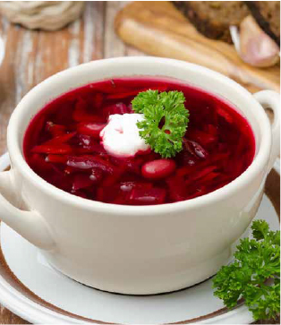

Назад
Борщ

Овощной борщ - легкое и полезное первое блюдо без мяса. Рецепт очень простой, ведь овощи предварительно не обжариваются, их необходимо только нарезать и можно сразу приступать к варке борща
ИНГЕДИЕНТЫ
- Свекольная ботва 400 г
- Картофель 400 г
- Морковь 100 г
- Репчатый лук 100 г
- Бульон или вода 1,4 л
- Свежие бобы или горох 80 г
- Сметана 60 г
- Специи, соль по вкусу
ПРИГОТОВЛЕНИЕ
- В чашу мультиварки положить свекольные листья, нарезанные овощи, свежие бобы или горох
- Залить все водой или бульоном
- Закрыть крышку и запустить программу «Суп»
- Готовое блюдо подавать со сметаной